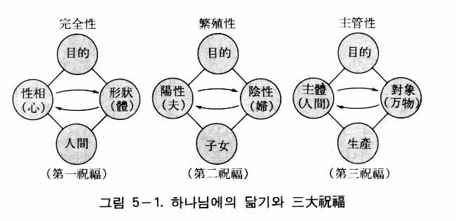
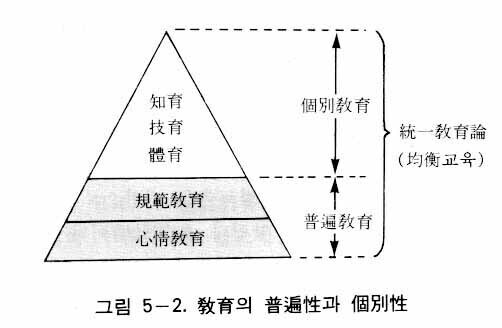

今日、青少年の脱線、性道徳の退廃、校内暴力事件の頻発などに見られるように、民主主義社会の教育は危機に瀕している。しかし、このような混乱を救いうる教育理念は見あたらず、今日の教育は方向感覚を失っている。師弟の道も崩壊している。すなわち生徒は先生を尊敬せず、先生は権威と情熱を失っている。その結果、先生は知識を売り、生徒は知識を買うというような関係になって、学校は知識の売買場にまで転落する傾向が見られるのである。このような状況に共産主義が大学界に浸透し、学内を争乱の場とさせてきたのである。
民主主義の教育理念とは、主権在民、多数決主義、権利の平等などの民主主義の原則を守りながら、他人の権利を尊重し、自己の責任を果たし、その上で自己の権利を主張する市民、すなわち民主的市民を養成することであるといえよう。
ところでこのような教育理論に対して、共産主義者たちは次のように攻撃した。階級社会において、支配層が労働者や農民の権利を尊重しうるだろうか。階級社会において義務と使命を果たすとは、権力層の忠実な僕となることではないか。それは真なる民主主義ではない。真なる民主主義とは、人民大衆である労働者や農民のための民主主義、すなわち人民民主主義である。したがって真なる民主主義教育は人民のための教育でなくてはならず、真なる教育を行うためには資本主義社会を打倒し、社会主義社会を建設しなくてはならない。そのように宣伝した。
共産主義のこのような讒訴は資本主義社会における搾取、抑圧、不正、腐敗などの社会的構造悪が残っている限り、説得力を失わないであろう。したがって、なんとしても、このような社会悪を除かなくてはならない。そのためには神の真の愛を基盤とした、新しい価値観運動が展開されなくてはならず、新しい教育理念が確立されなくてはならないのである。
新しい教育理念は、人間の成長に対して本来神が願われた基準を根拠として立てられなければならない。それは混迷した今日の教育に方向性を提示し、未来社会に対して教育のビジョンを提示しうるものでなければならない。すなわち、来たるべき未来の理想社会に対備するための教育論でなければならない。本教育論（統一教育論）はまさにそのような教育論として提示されるものである。
ところで教育理論には二つの側面がある。一つは教育の理念、目標、方法などに関するもので、いわゆる教育哲学がそれに当たる。他の一つは、客観的な立場で教育現象を扱うものであって、教育科学がそれにあたる。教育課程（カリキュラム）、教育評価、学習指導、生徒指導、教育行政、教育経営などを研究するものである。
教育において、この二つの側面は、性相と形状の関係にある。つまり教育哲学は性相的教育学であり、教育科学は形状的教育学であるということができる。ところが今日、教育科学が科学尊重の潮流の中で大きく発展したにもかかわらず、教育哲学は軽視され、衰退している。今日の教育が方向感覚を失っているということは、とりもなおさず教育哲学の不在を意味する。したがって、今日、切に要求されているのは、新しい教育哲学の確立である。統一教育論はまさにそのような要望に答えようとするものである。
神は御自身のかたちに人間を創造された（創世記一・二七）。そして創造が終わると神は人間に「生めよ、ふえよ、地に満ちよ、地を従わせよ。海の魚と、空の鳥と、地に動くすべての生きものとを治めよ」（創世記一・二八）という祝福（三大祝福）を与えられた。それが教育の根拠となる。すなわち教育とは、神に似るように子女を養育せしめることであり、子女が神に似るように導く努力である。神に似るとは、神相と神性に似ることをいう。人間は生まれながらにして、神相（性相と形状、陽性と陰性、個別相）をもっているが、それは極めて未熟な状態にあるのであり、成長しながら次第に神の神相に似ていくのである。神性の場合はなおさらそうである。それで神に似るとは、神相においては、神の性相と形状、陽性と陰性、個別相に、神性においては、神の心情、理法、創造性に似るようになることを意味する。
神が人間に与えた祝福において、「生めよ」（be fruitful）とは個体の人格を完成せよという意味であり、「ふえよ、地に満ちよ」とは、夫婦になって子孫を繁殖しなさいという意味であり、「地を従わせよ……すべての生きものを治めよ」とは、万物を主管せよという意味である。この三大祝福を成就することによって、人間は神の神相とともに、神の神性つまり心情、理法、創造性を受け継いで、完全性、繁殖性、主管性において、神に似るようになるのである（図５―１）。次に完全性、繁殖性、主管性に関して具体的に説明することにする。この三大祝福において教育の理念が立てられるためである。

完全性
イエスは「あなた方の天の父が完全であられるように、あなた方も完全な者となりなさい」（マタイ五・四八）といわれた。これは神の完全性に似なさいということである。完全性とは性相と形状の統一のことをいう。神において、性相と形状は主体と対象の関係において、心情を中心として円満な授受作用を行い、合性一体化をなしている。この状態が完全性である。
したがって神の完全性に似るとは、人間においても、心情を中心として性相と形状が一つになることを意味する。本性論で述べたように、人間の性相と形状には四つの類型があるが、ここではそのうち生心と肉心のことをいう。生心と肉心が一つになるためには、生心が主体、肉心が対象にならなければならない。すなわち生心が肉心を主管しなければならない。生心は真善美の価値を追求し、肉心は衣食住および性を追求する。したがって生心と肉心が一つになるとは、真善美の生活を第一次的に、衣食住の生活を第二次的に追求することを意味するのである。
生心と肉心の授受作用の中心は心情であり、愛である。結局、愛を基盤とした真善美の生活を中心にして、衣食住の生活が営まれなければならないのである。それがすなわち神の完全性に似ることである。人間は幼い時には、真善美の価値はよく分からないが、成長するにつれて、次第に心情が発達して、愛を中心とした真なる生活、善なる生活、美なる生活をするようになる。そうして次第に神の完全性に似ていくのである。
ところで人間は霊人体と肉身の二重的存在であるから、人間の成長には霊人体の成長と肉身の成長がある。人間に与えられた「生育せよ」という第一祝福は、肉身の成長の意味もあるが、主として霊人体の成長すなわち心霊基準の向上を意味しているのである。しかし霊人体も肉身を土台にして、すなわち肉身との授受作用によって成長するのである。そのようにして成長すれば神の完全性を相続させるということである。したがってこれは第一の予約祝福である。
繁殖性
次は神の繁殖性に似るということ、すなわち人間が子女繁殖の段階にまで成長するということである。それは神が陽性と陰性の調和体であるように、その陽性と陰性の調和に似るということである。人間における陽性と陰性の調和とは夫婦の調和をいう。神の属性である性相と形状の授受作用（統一）と、陽性と陰性の調和によって人間が創造されたのであるが、それは神の繁殖性によるのである。それで人間も心と体の統一と陽性と陰性の調和によって、子女を繁殖するのである。
神の繁殖性に似なさいとは、神のように陽性と陰性が円満な授受作用をなすことのできる能力を備えなさいということを意味する。それは一人の男性と一人の女性が結婚して子女を繁殖する資格を備えるように成長しなさいという意味である。すなわち男性は男性としての資格を完全に備え、女性は女性としての資格を完全に備えなさいということである。言い換えれば、夫としての道理、妻としての道理を果たすことができる段階にまで成長しなさいということである。そしてそのような資格を備えるようになったら、結婚して子女を繁殖しなさいということである。したがってこれは第二の予約祝福である。
主管性
さらに人間は神の主管性に似なければならない。主管性に似るということは、神の創造性に似るということである。神の創造性とは、心情（愛）を中心として対象（新生体）をつくる能力をいう。神はその創造性をもって人間および万物を創造し、主管されようとしたのである。本来、人間はそのような神の創造性を与えられている。したがって人間は、心情を中心として万物を主管するようになっているのである。すなわち人間は成長すればそのような能力を備えるようになるのであり、それが第三の予約祝福である。
すべての産業活動も万物主管である。例えば農民は田畑を耕すが、それは人間の土地に対する主管である。労働者は工場で機械を用いて原料を製品にするが、それは機械や原料に対する主管である。また漁業は海や魚に対する主管であり、林業は山や木に対する主管である。
万物を主管するということは、万物に対して創造性を発揮することである。創造性を四位基台の側面から見れば、内的四位基台と外的四位基台を形成する能力をいう。したがって農業においては、農民はアイデアに基づいて創意的に、さらに多くの収穫をあげようと努力するのである。商業においてもアイデアと創意がなければ成功できない。要するに農業、鉱業、工業、商業、林業、漁業などは、みな人間の創造性発揮の対象であり、万物主管の営みである。科学や芸術も万物主管の範疇に入る。さらに社会を主管すること、すなわち政治も万物主管の中に入る。
ところが、人間は堕落によって神の創造性を受け継ぐことができなかった。神の創造性は心情を中心とした創造性であるが、堕落のために、心情を中心としないで、利己心を中心とした創造性になってしまった。そのために人間は、そのような自己中心的な創造性でもって、社会や自然に被害を及ぼすことが多かったのである。戦争の武器の生産だとか、公害の増大などが、その例である。したがって教師は新しい教育論の立場から、学生たちが心情を中心とした創造性を発揮するように、すなわち神の主管性に似るように導かなくてはならない。
人間は神に似るように造られたが、生まれるとすぐ神に似るわけではない。神に似るようになるためには、一定の成長期間がなければならない。被造世界は時間・空間の世界であるからである。それで人間は蘇生、長成、完成の三段階を経過して成長して、初めて神に似るようになる。すなわち完全性、繁殖性、主管性において神に似るようになるのである。したがって成長とは神に似てゆく過程であるが、それは神の人格的な側面と神の陽陰の調和の側面、そして神の創造性に似ていく過程のことをいうのである。
神が人間に与えた三大祝福とは、人間が成長したとき、神の完全性、繁殖性、主管性を相続するという意味の祝福である。だから三大祝福は三大予約祝福である。ところが人間始祖の堕落によって、人間に与えられた三大祝福は成就されなかった。この三大祝福は創世記に書かれているように、「……せよ」という命令形式の祝福である。たとえ人間が堕落したとしても、神の命令が取り消されたのではなくて、命令（祝福）それ自体は今日まで有効である。これは天意が人間の潜在意識を通じて、三大命令すなわち三大祝福を成就するように働きかけてきたことを意味する。それで人間は、無意識のうちにも、三大祝福を実現する方向に努力してきたのである。すなわち堕落社会にあっても、人間はみな我知らず、そのような天意に従って、たとえ不十分であるとしても、人格的に成長し、良い相手を見つけて家庭を築き、自然を支配し、社会を改善しようと努力してきたのである。人間に成長欲、結婚欲、支配欲、改善欲などがあるのはそのためである。そうであるとしても、そのような欲望は今日まで完全には達成されなかった。それは人間始祖の堕落のためであった。
そのように本然の世界において、人間は三大祝福を完成するために成長してゆかなければならない。人間以外の万物も成長するが、万物の場合、原理自体の自律性と主管性によって成長する。生命の赴くままに任せておけば、自然に成長するのである。原理自体の自律性と主管性とは、まさに生命を意味するのである。ところが人間の場合、肉身は万物と同様に原理自体の自律性と主管性によって成長するが、霊人体の成長はそうではない。霊人体は責任分担を全うすることによって成長するようになっているのである。人間に責任分担が課せられているのはそのためである。責任分担によって成長するとは、人間が自らの責任と努力によって人格を向上させていくことを意味する。したがって人間は自由意志によって規範（原理）を守りながら、神の心情を体恤するように努力しなければならないのである。
人類始祖であるアダムとエバは、神の戒めを守りながら成長して、神の心情を体恤したあと、夫婦となり、神の真の愛を実現しなくてはならなかった。そしてアダムとエバは全人類を代表した最初の人類の先祖とならなくてはならなかったので、彼らには自己の責任分担のみならず、後孫の責任分担の大部分までも担わされていたのである。だから神は、アダムとエバの責任分担には絶対に干渉されなかった。
アダムとエバが神のみ言を守りながら、自らの力でそのような厳しい責任分担を全うしていたならば、その子孫たちはいたって少ない責任分担だけで、すなわち父母の教えに従順に従うだけで完成できるようになっていた。そのような内容のためにアダムとエバの場合は、誰かの助けを受けることなく、純粋に自分たちの責任だけで三大祝福を完成しなければならなかった。ここでアダムとエバが完成したのちに、子女が父母の教えに従順に従うということは、父母の教え、すなわち父母の教育を受けなくてはならないことを意味するのである。
ここに父母の子女に対する教育の必要性が生じる。子女が果たすべき責任分担のために父母による教育が必要なのである。ここに教育の理念が立てられる。すなわち、父母が子女を教えて三大祝福を完成できるように導くというのが教育理念となるのである。したがって教育の本来の場は父母が常に住んでいる家庭でなくてはならない。しかし文化の発達とともに、情報量や教育内容が増大するようになり、現実的には不可能なので、教育の場は必然的に家庭から教育を専門にする学校へ移るしかなかった。その代わり、学校では先生は父母の代わりに教育するのである。したがって教師は父母の心情で、父母の代身として学生を教えなければならない。それが本来の教育のあり方である。
統一教育論において、教育の目標とは、被教育者が神の完全性、繁殖性、主管性に似るようにせしめるということである。それが統一教育論の教育の理念となる。
ここで神の完全性に似るということは、個体完成（個性完成）をいう。個体完成は第一祝福の完成であり、人格の完成をいう。また繁殖性に似るとは家庭完成をいう。これは男性と女性が将来、結婚して、夫婦の調和を現し、円満な家庭を実現することをいう。すなわち第二祝福の完成をいう。そして主管性に似るとは主管性完成をいう。これは万物の主管のために神の創造性に似ることをいう。すなわち第三祝福の完成をいうのである。
このように統一教育論における教育の理念は三大理念からなるが、それは第一祝福完成のための個体完成（個性完成）、第二祝福完成のための家庭完成、そして第三祝福完成のための主管性完成をいうのである。
このような理念を基盤とするとき、人間にはいかなる教育が必要なのであろうか。個体完成のためには心情教育が必要であり、家庭完成のためには規範教育が必要であり、主管性完成のためには技術教育、知識教育、体育などの主管教育が必要である。次にこの三つの教育の形態について説明する。
個体完成のための教育
神の完全性に似るようにする教育が心情教育である。神の完全性に似るとは、性相と形状の統一性に似ることであり、それは生心と肉心が主体と対象の関係において授受作用を行って、一つになった状態をいう。神において、性相と形状は心情を中心にして授受作用を行って、統一をなしている。したがって生心と肉心が一つになるためには、心情が生心と肉心の授受作用の中心にならなくてはならない。心情が生心と肉心の中心になるためには、神の心情を体恤して、個人の心情が神の心情と一致しなければならない。個人の心情が神の心情と一致するようにする教育を心情教育という。ゆえに心情教育が個体完成のための教育となるのである。
心情教育とは、言い換えれば、神が人間を愛するように、子女を万民や万物を愛しうるような人間に育てる教育である。そのような人間に育てるためには、子女が神の心情を体恤するようにさせなくてはならない。それでは、子女はいかにして神の心情を体恤するようになるのであろうか。そのためにはまず神の心情を理解させなければならない。
神の心情の表現形態
神の心情は創造と復帰の摂理を通じて三つの形態に表現される。すなわち希望の心情、悲しみの心情、苦痛の心情である。
① 希望の心情
希望の心情とは、宇宙創造における神の心情であって、無限の愛を注ぎうる最愛の最初の子女、アダムとエバを得る期待と希望に満ちた喜びの感情をいう。その希望の心情が達成されたとき、神はいうことのできない満足に満ちた喜びを感じるのであった。実際にアダムとエバが生まれたとき、神の喜びは表現することのできない満足に満ちた喜びであったのである。
最近の物理学によれば、約百五十億年前に宇宙は生成し始めたのであった。これは統一思想から見るとき、約百五十億年前に、宇宙が創造され始めたということである。神がそのように長い時間をかけて、宇宙を創造された理由は何であったのだろうか。それは最愛なる子女、アダムとエバを創造されるためであった。その子女を得る一時を望みながら、神はいかなる苦労をもいとわず、そのような長い期間をかけながら宇宙を創造されたのである。希望に満ちた神は、宇宙創造の過程がいかに長く、困難であろうとも、それが長いとか、苦しいとは感じなかったのである。
そのような事実をわれわれは経験を通じて知ることができる。すなわち、喜ばしい結果を期待しながら仕事をする時には、いくら苦しさが予想されても実際にぶつかって見ると、それほど苦しさを感じないだけでなく、その期間が早く過ぎていくのである。それは喜びが近づいているという希望があるからである。喜びの結果に対する神の期待は、われわれ人間が経験するものより、はるかに大きいものであった。そして実際に、アダムとエバが生まれたとき、神の喜びはたとえようもなく大きく、深いものであった。
② 悲しみの心情
悲しみの心情とは、アダムとエバが堕落し、死亡圏内（サタンの支配化）に落ちた時の神の心情をいう。子女を失って悲しむ父母のような神の感情をいうのである。教会の初創期に、文先生はアダムとエバの堕落に及ぶと、その時の神の悲しい心情を紹介しながら、いたく痛哭されたのであった。
アダムとエバが堕落した直後から復帰摂理が始まったのであるが、そのとき神は、未来にみ旨が実現される、その喜びと希望の世界を見つめながら摂理を進めてこられたのである。ところが堕落した人々は、自分たちはそのような神の摂理にはかかわりないといって、退廃と暴力をこととしてきたのであり、神はそのような光景を見つめながら、その度に嘆き悲しまれたのである。そのような歴史を摂理してこられた神は、悲しみの神であると同時に恨の神であった。創造の時の期待と希望があまりにも大きかったために、堕落によってもたらされた神の失望の悲しみは、それだけに、さらに大きかったのである。
この世においても、愛する子供が死ぬとき、父母は、そしてとりわけ母は非常に悲しむ。たとえ子供の病気が重くて、不治の病であると宣告されても、そしてついに子供の息が絶えても、悲しみのために、どうしていいか分からないというような母が少なくないのである。アダムとエバが堕落した時の神の悲しい心情と、監獄のようなサタンの世界において苦労するアダムとエバとその後孫たちの姿を見つめておられる神の悲しみの心情は、子供を失った、この世の父母の悲しみとは比較することができないほど大きなものであった。歴史が始まって以来、神のように悲しんだ人間はかつて、この世にいなかったというのが、文先生が語られた神の心情の一つの姿であった。
③ 苦痛の心情
苦痛の心情とは、復帰摂理を進める過程において、摂理歴史の中心人物たちがサタンとその手先たちから迫害され、苦しんでいるのを見つめる時の神のつらい感情のことをいう。神は堕落した人間を捨てないで、再び生かすために予言者や聖賢たちを送られたにもかかわらず、人々は彼らの教えに従わないで、むしろ彼らを迫害し、時には虐殺するまでに及んだのであるが、そのような光景を見られるたびごとに、神の胸は釘が打ち込まれ、槍で突かれるように痛んだのである。
彼らは堕落世界の人間を何としても救おうとして神が送られた聖賢、義人たちであった。したがって、彼らが受ける蔑視、嘲笑、迫害、賤しめなどは、まさに神自身に対して与えられたものとして感じられたのである。そのように復帰摂理路程における神のもう一つの心情は苦痛の心情であったのである。
神の心情の理解
心情教育のためには、このような神の三つの心情を被教育者に理解させなければならない。特に復帰路程における神の心情を教えることが必要である。そこで参考として、アダム家庭、ノア家庭、アブラハム家庭、モーセ路程、イエス路程など、復帰路程に現れた神の心情を紹介することにする。以下は文先生が紹介された神の心情に関する内容である。
① アダムの家庭における神の心情
希望の中でアダムとエバを創造された神は限りない希望と喜びでいっぱいであったが、アダムとエバが堕落したので限りなく悲しまれた。そこでアダムの家庭を救うために、アダムとエバの子供であるカインとアベルに献祭をさせたのであるが、そのとき神は彼らが献祭に成功するだろうという大きな希望をもって臨まれたのである。
神は全知全能であるからアダムとエバや、カインとアベルが失敗するということは、初めから分かっていたのではなかろうか。そうであるならば、神が嘆き悲しむというようなことがありえるだろうか。そのように考える人がいるかもしれない。しかし、そうではない。
神はたとえ人間が堕落することもありうる可能性を知っていたとしても、神は心情の神であり、希望の神であるために、堕落しないことを願う心が堕落の可能性を予知する心に対して、比較できないくらい強かったのである。
献祭においても同じである。献祭にかけた神の期待は大変大きく、希望は強かったために、献祭の失敗の可能性に対する予知は完全に忘れてしまっていたのと同じであった。ここに心情と理性の違いがあるのである。心情の衝動力は理性を圧倒するほど強力なのである。
そのようにアダムとエバの時も、カインとアベルの時も、神は成功のみを願う、期待と希望の神であった。ところがアダムとエバも、カインとアベルも失敗してしまった。その悲しみは例えようもなく大きかった。ここに指摘することは、神はその悲しみを外に表されなかったという事実である。それはそうした場面ごとに、サタンが共にいて注視していたからである。もし神が悲しみを表したとしたら、悲しみでぬれたその姿はサタンにとって、威信も権威もなく、神らしくない、みすぼらしい姿として映るだけだからである。それゆえ神はただ黙して、顔を伏せて、わき上がる悲しみを抑えながら、悲壮な面持ちでその場を立ち去られたのである。これが、草創期に文先生が明らかにされたアダム家庭における神の心情である。
② ノア家庭における神の心情
アダムの家庭を離れた神は、千六百年という長い間、荒野の道を歩きながら、地上の協力者を探してさまよわれた。その間、人間はみな神に背を向けるばかりで、誰も神を迎える者がいなかった。したがって地上には、神が宿ることのできる一軒の家もなければ、立つことのできる一寸の土地もなく、相対することのできる一人の人間もいなかった。文字どおり天涯孤独な哀れな身の上となって、寂しい道を歩まれたのである。そういう中で、ついに神は一人の協力者、ノアに出会ったのである。その時の神の喜びは例えようもなかった。しかし神は摂理的な事情のために、愛するノアに対して厳しい命令を与えなければならなかった。それが、まさに方舟を造れという命令であった。神の命令を受けたノアは、人々からあらゆる嘲笑と蔑視を受けながら、あらゆる精誠を尽くして、百二十年間、方舟を造ったのである。
ノアは神の前に立てられた僕であり、義人であっただけで、神の子ではなかった。しかし、たとえ僕であっても、神はそのようなノアに出会ったことを、それほどまで喜び、神自ら、僕の立場に下りてノアと共に苦労の道を歩まれたのであった。
ところが洪水審判を経たあとに、ノアの子ハムが責任分担を果たさなかったために、洪水審判で生き残ったただ一つの家庭であるノアの家庭にサタンが侵入する結果となってしまった。そのとき神は胸が張り裂けるような痛みと悲しみを感じながら、再び悄然としてノアの家庭を立ち去られたのであった。
③ アブラハム家庭における神の心情
その後、四百年を経て神はアブラハムを探し立てた。アブラハムの路程において一番深刻だったのは、アブラハムが百歳の時に得た、ひとり子イサクを供え物として捧げる時であった。鳩と羊と雌牛を捧げる象徴献祭に失敗したアブラハムに対して、神は息子のイサクを供え物として捧げよと命令された。そのとき、人倫に従って子を生かすべきか、天命に従って子を捧げるべきか、人倫か天倫か、アブラハムは苦しんだのである。イサクを捧げる代わりに、自分自身を供え物にして、イサクを生かしたいというのがアブラハムの心情であった。けれども彼は結局、神の命令に従ってイサクを供え物として捧げようとしたのである。人倫を断ち切り、天倫に従うことを決意したのである。モリヤ山に向かって行く三日間の期間は、アブラハムにとっては、天倫か、人倫か、いずれかを選ばなくてはならない苦悩の時であった。そのとき神は遠くからただ眺めていたのではなかった。「子を捧げよ」という厳しい命令を発してからは、アブラハムの苦しむ姿を見ながら神はアブラハムと共に、否それ以上に苦しまれたのである。
アブラハムはモリヤ山で最愛のわが子イサクを祭物として捧げようと、刀を取って殺そうとした時、神は慌ててアブラハムがイサクを殺すのをやめさせ、「あなたが神を恐れる者であることを今知った」（創世記二二・一二）といわれた。
そのとき、アブラハムの神のみ旨に対する心情と、神に対する絶対的な信仰と従順と忠誠は、すでに彼をしてイサクを殺したという立場に立たせたのである。したがってイサクを殺さなくても殺したのと同じ条件が成立したのである。それで神はアブラハムにイサクを殺すのをやめさせ、その代わりに雄羊を燔祭として捧げさせた。「あなたが神を恐れる者であることを今知った」というみ言の中には、象徴献祭に失敗したアブラハムに対する神の悔しさと、イサク献祭において見られたアブラハムの忠誠に対する神の喜びが、共に含まれていたのである。
④ モーセの路程における神の心情
エジプトの王子として育てられたモーセは、同胞であるイスラエル民族の受けている苦痛の現場を目撃したあと、神のみ旨に従って彼らをカナンの地へ復帰させようとして、千辛万苦ののちに、彼らを荒野に導いたのであった。しかしイスラエル民族は困難にぶつかるたびに指導者であるモーセに反逆した。モーセがシナイ山で四十日間の断食を行ったのち、二枚の石板を受けて山から降りて見ると、イスラエル民族は金の子牛を造って拝んでいた。モーセは、そのような神を冒瀆する不信の行為を見て激しく怒り、石板を投げつけて壊してしまったのである。そのとき神は「わたしはこの民を見た。これはかたくなな民である。それで、私をとめるな。わたしの怒りは彼らにむかって燃え、彼らを滅ぼしつくすであろう。しかし、わたしはあなたを大いなる国民とするであろう」（出エジプト記三二・九―一〇）といわれた。
そのとき、モーセの心情はいかなるものであったのだろうか。イスラエル民族の不信をしかって、「この民族を滅ぼしつくそう」という神の怒りに直面して、瞬間的に彼の民族愛、愛国の心情がほとばしったのである。そして彼はいかなる困難があろうとも、この民族を生かしたいと思い、できれば彼らとともにカナンの地に入ろうとしたのである。そこで彼は神にすがりついて、「どうかあなたの激しい怒りをやめ、あなたの民に下そうとされるこの災を思い直し……」（出エジプト記三二・一二）といいながら、民族を救おうと哀願したのである。神はモーセのそのような民族愛の訴えの祈りを受け入れて、ついにイスラエルを滅ぼすことを思いとどまられたのであった。
ところが四十年間、荒野を流浪したあと、カデシバルネアに到着した時、イスラエル民族は「ここは食べるものもない」と再びモーセを恨んだのであった。その時、モーセは不信するイスラエル民族に対する怒りから、一度打つべき岩を二度打ってしまった。これは神のみ旨に反することであった。そしてその後、神はモーセをピスガの頂きに呼んで、イスラエル民族が入って行くカナンの地を見せながら、「あなたはカナンの地に入ることはできない」（申命記三二・五二）と告げられたのであった。八十歳の老いた体を駆って、四十日間の断食を二回も行ったモーセ、不信の民族を抱えて四十年間もシンの荒野で苦労をしてきたモーセであった。事実上、出エジプトの主役であったモーセをカナンの地へ導き入れたい神であったが、サタンの讒訴のために、やむを得ず目前にあるその地を見せながら彼を見捨てるしかなかった。そこに神の深い悲しみと痛みと切なさがあったのである。
⑤ イエスの路程における神の心情
旧約聖書に予言されていたように（イザヤ書九・六）、イエスは地上にメシヤとして来られた。全地がもろ手を挙げて歓迎しなければならない救い主であったにもかかわらず、彼は幼い時から排斥された。家族がイエスを追い出し、ユダヤ教がイエスを不信し、結局、イスラエル民族がイエスを追い出したのである。どこにも行くところがないイエスであった。
イエスは三年間の公生涯路程を含めて三十三年間、寂しい孤独な生涯を送られた。「きつねは穴があり、空の鳥には巣がある。しかし、人の子にはまくらする所がない」（ルカ九・五八）といわれ、その孤独な心情を吐露された。そしてエルサレムの城を眺めて涙を流しながら、「場内の一つの石も他の石の上に残して置かない日が来るであろう。それは、おまえが神のおとずれの時を知らないでいたからである」（ルカ一九・四四）といって、イスラエル民族を叱責されたのである。
ある時には、ガリラヤの浜辺をさまよいながら、選民ではないサマリヤの女に話しかけたりして寂しさを粉らせたり（ヨハネ四・七―二六）、ユダヤ人の指導者たちより取税人や遊女たちが先に天国に入るであろうといって（マタイ二一・三一）、救い主である自分を追いやる教団に対して寂しさを告白されたのであった。そのとき、神もイエスと共に、孤独な道を歩まれたのであった。
そしてついに十字架にかけられた、神のひとり子イエスの悲惨な姿を見られる神の心情は、いかなるものであったのだろうか。あまりにも悲惨な姿を見るに忍びず、そして十字架からイエスを下ろすことのできない事情を嘆きながら、神は顔をそむけられた。イエスの十字架を見ておられる神の苦しみは、イエスの苦しみ以上であったのである。
神の心情の紹介
以上はすべて草創期に文先生が、説教の度に泣きながら紹介された内容である。すなわち、アダム、ノア、アブラハム、モーセ、イエスにおける神の心情であった。そればかりでなく、その他の宗教や民族における聖賢、義人たちの受難の路程の背後にも、彼らを導いた神の心情があった。心情教育において、このような神の心情を父母や教師が子女や生徒に知らせなくてはならない。直接話して聞かせるだけでなく、テレビ、ラジオ、映画、ビデオや、小説、演劇、絵画などの作品を通じて教えることができる。
実践を通じた心情教育
神の心情を言葉で教えるだけでなく、愛の実践を通じて直接、見せることも必要である。そのためには、まず家庭において父母が子供を真剣に愛さなければならない。食べさせ、着せ、住まわせる、礼節を教えることなど、子供を育てるのに常に真心をもって温かく愛さなければならない。それが父母が子供に与える真の愛である。このような愛を父母が子供に与え続けたら、子供たちは父母を心から尊敬し、親孝行をするのはもちろんのこと、子供たちも互いに愛し合うようになる。神の心情が父母の真の愛の実践を通して子供たちに伝えられるからである。
学校教育の場合も同様である。教師は言葉や行動の実践を通じて、神の真の愛を見せなければならない。科目ごとに真心を尽くして教えるのはもちろん、生徒一人一人に対して自分の子供のように、父母の心情をもって真心を尽くして導かなければならない。学校教育は家庭教育の延長であるからである。
教師の日常の言動に神の愛が込められなければならない。先生の公私の生活における一言一言、行動の一つ一つが生徒たちにとって、みな学ぶ教材となり、人格形成の素材となるからである。そのような愛がみなぎる学校教育を受けると、生徒たちは深く感動し先生を尊敬し、従うようになる。そして、そのような先生に似た真の愛の実践者になろうとするのである。以上が、家庭と学校における実践を通じた心情教育である。
家庭完成のための教育
家庭完成のための教育とは、一人の男性と一人の女性が夫婦となったとき、神の陽陰の調和に似るようにするための教育であり、本然の夫婦となれる資格を備えるための教育である。人間堕落が規範（神の戒め）を守らなかったことにあったので、この教育はまず神の戒めを守るようにするための規範教育である。規範教育は夫婦となって家庭を形成する資格を備えるための教育である。男性は夫としての道理を、女性は妻としての道理を身につけなければならない。また家庭における父母と子女の本然のあり方や兄弟姉妹のあり方も、規範教育に含まれる。
規範教育において、特に重要なのは、性の神聖性、神秘性について教えることである。性は結婚を通じて初めて体験するものであって、それまでは決して冒してはならないのである。聖書によれば、神はアダムとエバに「善悪を知る木からは取って食べてはならない」（創世記二・一七）といわれた。善悪の果はエバの性的愛（『原理講論』一〇三頁）を意味するために、「善悪の果を取って食べてはならない」ということは、性（性の器官）は神聖なものであって、性の領域を汚すことによって、性を冒してはいけないということを意味する。
この戒めはアダムとエバだけのものではなくて、現在も有効であり、未来にも有効な永遠なる天の至上命令である。これはまた男女が結婚したあとにも、他の異性と脱線行為をすることは決して許されないという至上命令でもある。したがって規範教育とは、神の戒めを守りながら神の陽陰の調和に似るようにするための教育、すなわち夫婦の資格を備えるための資格教育なのである。
理法的存在になるための教育
人間はロゴス（理法）によって創造されたために、規範教育はまた人間がロゴス的存在、理法的存在になるように、すなわち天道に従うようにするための教育であり、理法教育ともいう。天道とは、宇宙を貫いて作用している法則であって、授受作用の法則のことをいう。天道から自然法則と価値法則が導かれるが、そのうち価値法則が規範となるものである。宇宙に縦的秩序と横的秩序があるように、家庭にも縦的秩序と横的秩序がある。したがって家庭にはこの二つの秩序に対応する価値観、すなわち縦的価値観と横的価値観が成立する。そのほかにも個人的価値観がある。それらについては、すでに価値論において述べた。
規範教育は、心情教育と並行して行われなくてはならない。規範教育そのものは義務だけを強要しがちだからである。規範とは、「……してはならない」とか、「……しなければならない」という形式で行為を規定するものであるために、そこに愛がなければ、その規範は形式化され律法的なものになりやすい。したがって、規範教育は愛の雰囲気の中で実施されなければならないのである。
規範のない盲目的な愛のことを一般的に溺愛という。そのような愛で子供に対すれば、子供は結局、分別力がなくなり父母や教師を軽視するようになる。父母の愛や教師の愛には、どことなく権威がなくてはならない。そのような愛はロゴスにかなった愛でなくてはならないのである。一方、愛は少なく、規範だけを強調すれば、子供は拘束感を感じて親や教師に反発するようになる。愛は規範の下にあるのではなく、上になければならないのである。したがって子供がたとえ規範を一、二度守らなかったとしても、温かい愛をもって許してやらなければならないのである。
愛はすべてを許し受け入れようとするが、規範は厳しく規制しようとする。愛は円満で丸いが規範は直線的である。人間において、愛と規範は統一されなくてはならない。愛は円満であり、規範は直線的であるから、愛と規範の統一された人間は、円と直線を統一したような人格者となる。すなわち人格者とは、最も円満でありながら厳しい面を統一的に備えた人をいうのである。このような人格をもつ人は、ある時にはとても優しく、またある時には非常に厳しくというように、時と場所に応じて、いつでもふさわしい態度を取ることができるのである。
それゆえ規範教育は心情教育と統一されなければならない。すなわち家庭と学校において、愛の雰囲気の中で子供の規範教育が実施されなければならない。規範のために愛が冷えればその規範は形式化してしまうからである。
主管性完成のための教育
主管教育は主管性完成のための教育である。主管性完成のためには、まず主管の対象に対する情報、すなわち知識を習得しなければならない。そのために、まず知識教育（知育）が必要である。次に、対象を主管するのに必要な創造性を開発するための技術を習得する教育も必要である。そのような教育が技術教育（技育）である。そして主管をよくするには、主管の主体である人間の体力を増進させなければならない。そのための教育が体育である。以上の知育、技育、体育を合わせて主管教育という。
知識教育において、主管に必要な知識を学ぶのであるが、それは主管の対象の領域によって、自然科学をはじめ、政治、経済、社会、文化など、広範囲の分野にわたっている。それらはみな、万物主管の概念に含まれるのである。技術教育において、習得する技術は万物主管の直接的な手法として主管教育の中心となるのであり、体育における体位の向上と体力の増進も、万物主管に肝要なのはもちろんである。そして技術教育や体育にも、さらに細分された専門分野がある。芸術教育すなわち芸能教育も、一種の技術教育と見なすことができよう。
要するに、主管教育は、創造性を発揮するための手段を学ぶものである。創造性は天賦のもので、人間には誰でも先天的な可能性として備わっているのであるが、これを現実的に発揮するためには主管教育が必要なのである。
創造性の開発と二段構造の形成
創造性を開発するとは、要するに神の創造の二段構造に倣って内的四位基台形成の能力を増大させ、外的四位基台形成の熟練度を高めることを意味する。
内的四位基台形成の能力とは、ロゴスの形成の能力、すなわち構想の能力をいう。そのためには知識教育を通じて知識を多く獲得して、内的形状（観念、概念など）の内容を質的、量的に高めなければならない。得られた知識（情報）が多ければ多いほど構想は豊富になる。ロゴスを形成するとは、いわゆるアイデアを開発することであり、産業における技術革新（イノベーション）も、絶え間ないロゴス形成の反復によってなされるのである。
次に、外的四位基台形成の能力を養うとは、一定の構想に従い、道具や材料を用いて、その構想を実体化する能力を高めること、すなわち外的授受作用の熟練度を高めることをいう。そのためには技術教育が必要となる。また身体的条件が必要であることはいうまでもない。したがって、体育による体力の増進も必要である。
普遍教育を基盤とした主管教育
主管教育は心情教育および規範教育を基盤として、それらと並行して行われなければならない。知識教育や技術教育や体育は、心情（愛）と規範に基づいて初めて健全なものとなり、創造性が
十分に発揮されるようになるからである。
心情教育と規範教育は、全人類が共通に受けなければならない教育であるから普遍教育という。それに対して主管教育は、個人の資質によって学ぶ領域であるから、ある人は自然科学、ある人は文学、またある人は経済学を専攻するというように、原則的に個別教育となる。
ここに普遍教育と個別教育は、性相と形状の関係にあるといえよう。心情教育と規範教育は精神的な教育、すなわち心を対象とする教育であり、主管教育は万物を主管する教育だからである。したがって普遍教育（心情教育、規範教育）と個別教育（主管教育）は主体と対象の関係において、並行して行われなくてはならない。それが均衝教育（ balanced education ）である（図５―２）。

ギリシア時代や中世、近世には、たとえ完全なものではなかったにしても、愛の教育があり、倫理・道徳の教育があった。しかし今日では、それらがほとんど無視されるようになって、ほとんどの場合、知識偏重、技術偏重のいわゆる不均衡教育が行われるようになった。その結果、人間性の健全な成長が妨げられているのである。そこで、ここに新しい教育論が現れて、新しい次元において、真の愛の教育、倫理・道徳教育を行わなければならない。そしてその基盤の上で知識教育と技術教育が行われるべきである。そのような均衡教育が実施されるとき、初めて科学技術は善なる方向に向っていくようになる。そうすれば公害問題や自然破壊などの問題も自然に解決していくであろう。また教師たちも、そのような教育を通じて教師としての権威を取り戻すことができるようになるのである。
ここで付記すべきことは、教育の原点は家庭教育にあるということである。家庭教育の延長、拡大、発展したものが学校教育である。したがって、家庭教育と学校教育が一体とならなくてはならない。そうでなければ、普遍教育としての心情教育と規範教育はそのままでは成立しにくく、したがって教育の統一性は期待されにくいのである。
歴史始まって以来、今日まで多く学者たちによって、いろいろな教育論が発表されてきた。また、それぞれの教育の理念に応じて養成される人間像があった。統一教育論においても、やはり教育によって養成される人間の理想像がある。統一教育論における被教育者の理想像とは、第一に人格者、第二に善民、第三に天才である。それぞれ心情教育、規範教育、主管教育に対応した理想像である。したがって教育を理想的人間像という面から見れば、心情教育は人格者教育、規範教育は善民教育、主管教育は天才教育ということができる。
人格者教育
人格者とは心情教育によって形成される人間像である。したがって人格者教育とは、被教育者をして神の心情を体恤し、日常生活において神の愛を実践するよう指導し、人格者として育てるための教育である。心情は愛の源泉であり、人格の核心である。心情（愛）が乏しければ、いくら知識をたくさんもっていても、いくら体力があっても、いくら強大な権力があっても、人格者とはなりえない。世俗的概念では、人格者とは一定の徳性と知識と健康を備えた人間をいうのであるが、統一思想において、人格者とは神の心情を体恤し、愛を実践する人をいうのである。
それでは理想的な人格者の姿は、果たしていかなるものであろうか。それは心情（愛）を基盤として、知情意の機能が均衝的に発達した全人的品格を完成した人間をいう。人格者は何よりも神の心情を体恤しながら生きるために、万人と万物に対していつも真の愛を実践しようと努力する。神に対しては忠孝の真心で神の悲しみと苦痛を慰めてあげるのであり、神の怨讐に対しては公的な敵愾心すなわち公憤心をもちながらも、神の真の愛を受け継いで涙ながらに怨讐を許すのである。普段はいつも温柔、謙遜の徳と温情にあふれる姿勢をもって、縦的、横的価値観を実践する。法道と愛の実践者であるので、他人に対しては最も優しく、自分に対しては最も厳しいのである。対人関係においては、愛と法道の統一を生活化する。法道のない愛は子供を惰弱にし、愛のない法道は拘束感だけを与えるからである。これが心情教育によって形成される人格者の姿である。一言で表現すれば、人格者とは万人と万物に対して神の真の愛を実践する人である。
善民教育
善民とは性品が善なる国民であるという意味であって、規範教育において形成される人間の理想像である。規範教育は普通、学校でも行われるが、その基盤は家庭にある。家庭は宇宙秩序の縮小体であり、社会、国家、世界は家庭の秩序体系を拡大したものとなっている。したがって、家庭において規範教育をよく受けた人は、社会、国家、世界における規範生活をよく行うことができる。そのような人は、善なる家庭人でありながら、善なる社会人であり、善なる国家人であり、善なる世界人となるのである。すなわち、規範教育を通じて善なる家庭人となれば、社会、国家、世界など、どこにおいても、その時、その時の規範にふさわしく行動するようになるのである。
なお地上において善民として生活すれば、霊界に行っても同様に善なる霊界人となる。地上においても霊界においても、善なる生活をする善民を善なる天宙人という。家庭、社会、国家、世界、天宙における善民の生活がすなわち天国における生活である。
天才教育
主管教育によって形成される人間の理想像が天才である。天才とは創造性の豊かな人をいうが、人間は本来みな天才である。なぜならば人間はおよそ、神の創造性を与えられた創造的存在だからである。「天才」という言葉そのものが「天が与えた才能」という意味であり、神の創造性を受け継いだことを意味するのである。つまり人間は生まれた時から、可能性として神の創造性を与えられているのである。したがって先天的に欠陥をもって生まれた人を除けば、すべての人間は、与えられた創造性を一〇〇パーセント発揮すれば、天才となるのである。しかし創造性をそのごとくに発揮するためには教育が必要である。その教育が主管教育である。
先に述べたように、主管教育は心情教育と規範教育を基盤として並行して行われる。すなわち主管教育は均衡教育の一環として行われなくてはならない。そうするとき、初めて真の創造性が現れる。心情教育や規範教育が不十分であるか、全く行われないなら、創造性は十分に発揮されない。例えば音楽的な創造性をもった子供がいて、ピアノを習っているとしよう。ところが父母がいつも不和であって、子供に冷たくあたったり、虐待したりすることが多い場合には、その子は心情的に傷を受けながら学校に通うことになる。そうすると、ピアノを弾いても、手が思うように動かない。感情が不安な状態でピアノを弾くからである。そういう子供は、どんなに立派な音楽家としての創造性を可能性としてもっていても、不和な家庭環境のために、その創造性の発露が妨げられるのである。
人間には個性が与えられているから、創造性にも特性がある。ある人には音楽的な創造性が、ある人には数学的な創造性が、ある人には政治的な創造性が、またある人には事業的な創造性が与えられているのである。そして各人が自分に与えられた創造性を十分に発揮すれば、音楽の天才となり、数学の天才になり、政治の天才になり、企業経営の天才になるのである。すなわち各人は個性にかなった特有の天才になり得るのである。
しかし人間は堕落した環境に住んでいるために、神から授かった創造性を十分に発揮できなくなり、天才になりにくい状況になってしまった。現実は数万人に一人が天才になりうる程度であって、大部分の人間はみな凡才にとどまるしかないのである。これが、堕落した社会における主管教育の一つの断面である。
さらに天才教育において、霊界の協助を受けるようになる。ことに神を中心とした家庭を基盤として均衡教育を行えば、善霊たちが霊的に協助するために、子供の天才的素質はすみやかに発揮されるようになるのである。
次に、従来の代表的な教育観の要点を紹介する。従来の教育観と統一教育論を比較することによって、統一教育論の歴史的な意義がさらに明瞭に示されるからである。
ギリシアの教育観（プラトンの教育観）
プラトン（Platon, 427-347 B.C. ）によれば、人間の魂には情欲的部分、気概的部分、理性的部分の三つの部分があるが、情欲的部分の徳を節制、気概的部分の徳を勇気、理性的部分の徳を知恵という。そして、この三つの徳を調和せしめるときに現れる徳を正義という。国家にはこの魂の三つの部分に対応する三つの階級がある。農・工・商の庶民は情欲的部分に対応する下級階級であり、軍人・官史は気概的部分に対応する中間階級であり、哲学者は理性的部分に対応する上層階級であるとされた。
善のイデアを認識した哲学者が国家を統治するとき、初めて理想国家が実現されるとプラトンは考えた。プラトンにおいて教育の目的は、人々をイデアの世界に導くことであった。それは少数の支配階級たる哲学者を養成する教育であった。理想的人間像は「愛智者（哲学者）」であり、同時に、心身が調和し、知恵、勇気、節制、正義の四徳を兼備した「調和的人間」であった。そして教育の究極的な目的は、善のイデアが実現した理想国家を実現することであった。
中世のキリスト教的教育観
ギリシア時代の教育が、社会に奉仕する善なる人間を目標としていたのに対して、中世のキリスト教社会においては、キリスト教を理想とする人間の育成を目標とした。神を愛し、神を敬い、隣人を愛する「宗教的人間」が理想的人間像であった。特に修道院において、そのような人間像を目指す厳格な教育がなされたが、それは純潔、清貧、服従を徳として、完全な霊的生活を営もうとする教育であった。すなわち、教育の目的はキリスト教的人間の育成であると同時に、来世の生活に対する準備であった。
ルネサンス時代の教育観
ルネサンス時代に入ると、服従や禁欲を徳とした神本主義の世界観を打ち破って、人間性の尊厳を重んずる人本主義の世界観が出現した。人本主義の教育観を代表するのがエラスムス（D. Erasmus, 1466-1515 ）であった。教育の目的は、本性的に自由人である人間をして、その人間性の完全な発達を遂げさせるということであり、個性的な、豊かな教養を身につけさせることを説いた。そして文学、美術、科学などの人文的教養を強調した。また、中世において無視されていた体育にも関心をもつようになった。ルネサンス時代の理想的人間像は心身が調和的に発達した「万能の教養人」であった。エラスムスの人間本性への復帰の思想は、コメニウスやルソーへと引き継がれていった。
コメニウスの教育観
コメニウス（J.A. Comenius, 1592-1670 ）において、人生の究極の理想は、神と一つになって来世において永遠の幸福を得ることであり、現世の生活はその準備であった。そのために人間は、 (1)すべての事物を知り、(2)事物および自己を統御することを知る者となり、(3)神の似姿にならなくてはならないとして、知的教育、道徳的教育、宗教的教育の三教育の必要性を説いた。「あらゆる人にあらゆることがらを教える」ことが、コメニウスの教育論の主題であり、この教育思想は汎知主義（pansophia ）といわれた(1)。
コメニウスは、教育によって達成される素質は本来、人間に内在するものであり、この内在する素質すなわち「自然」を引き出すことが、教育の役割であると考えた。コメニウスはまた、教育は本来、父母が責任をもつべきものであるが、それができない場合、父母に代わって学校が必要になるといった。
コメニウスによれば、理想的人間像は神と自然と人間に関する真なる知識のすべてを知った「汎知人」であり、教育の目的はすべてを知った実践的なキリスト者を育成し、キリスト教による世界の平和統一を実現するということであった。
ルソーの教育観
啓蒙時代の人物であるルソー（J.J. Rousseau, 1712-78 ）は『エミール』という教育小説を著し、「［人間は］万物をつくる者の手をはなれるとき、すべてはよいものであるが、人間の手にうつるとすべてが悪くなる(2)」と述べて、子供を自然のままに教育することを主張した。人間は本来、内在する「自然の善性」をもっているから、それをそのままの姿で開発すべきであるというのである。人間の自然能力の開発に対して妨害となる要因――既成の体系的文化や道徳的・宗教的観念の注入――を除去しながら、人間を自然のままに成長させていくというのが、ルソーの主張する教育である。ところが現実の堕落した社会において、自然のままの人間は社会には適応できない。しかし、理想的な共和制社会では自然のままの人間と社会の中の市民は両立すると考えて、社会人教育の必要性も説いた。
ルソーの教育観における理想的人間像は「自然人」であり、教育の目的は自然人を育成し、自然人が市民となる理想的な共和制社会を実現することであった。ルソーの教育観は、カント、ペスタロッチ、ヘルバルト、デューイなど受け継がれていった。
カントの教育観
カント（I. Kant, 1724-1804 ）は、「人間は教育されなくてはならない唯一の被造物である(3)」、「人間は、教育によってだけ人間になることができる(4)」といって、教育の重要性を説いた。教育の使命は、人間の自然的素質を調和的に発達せしめ、道徳律に従いつつ自由に行動しうる人間を養成することであった。そこにはルソーの影響があった。またカントは、教育は特定の社会に順応することを目標とするものではなくて、一般に人間そのものの完成を目標として、世界主義的でなくてはならないと主張した。
一方でカントは、人間の本性には根本悪があることを認めた。悪とは、道徳律を自己愛に従属させることによって成立するものであった。ゆえに内的な転換（回心）によって、道徳律を上位におかなくてはならないといい、義務がそうであることを命じているといった。道徳の尊重、科学への信頼、そして神への畏敬がカントの教育観・人間観の特徴であった。カントにおいて理想的人間像は「善なる人」であり、教育の目的は世界主義的な人間性の完成であり、究極には国際的な永久平和の確立であった。
ペスタロッチの教育観
ペスタロッチ（J.H. Pestalozzi, 1741-1827 ）は、ルソーの影響のもとに、「自然」に即した教育を主張し、人間に内在する高貴な素質である人間性を解放しようとした。単純なもの、純粋なものを基礎としながら、根本原理を直感することによって、人間は善の行いをするようになると彼は考えた。そして教育は家庭における母の愛から始まるとして、家庭教育が教育の基礎になると主張した。
ペスタロッチは人間性を構成するのに三つの根本力、すなわち精神力、心情力、技術力があるといい、それぞれ頭、心臓、手に担当すると考えた。そして精神力の教育が知識の教育であり、心情力の教育が道徳・宗教教育であり、技術力の教育が技術教育（体育を含む）であるとした。これらを統一する内的な力が愛である。愛は心情力の基本であり、道徳・宗教教育の推進力である。したがって道徳・宗教教育を中心として、この三つの教育は調和的に統一されると主張した(5)。
ペスタロッチの考えた理想的人間像は三つの根本となる力が調和的に発達した人間、すなわち「全人」であった。彼は愛と信仰を中心とした全人格的教育を主張したのである。教育の目的は、人間性を陶冶し、道徳的・宗教的な国家社会を建設することであった。
フレーベルの教育観
ペスタロッチを信奉し、ペスタロッチの人間教育を体系的に構成したのがフレーベル（F. Fröbel, 1782-1852 ）であった。フレーベルによれば、自然と人間は神によって統一され、神の法則によって動いている。神性が万物の本性を形成しており、その本性を表現し、啓示し、発展させることが万物の使命である。したがって、人間は人間に内在する神性を生活の中に現さなくてはならないのであり、教育はそのような方向に導くものとなるのである。彼は、次のように述べている。「このような神的なものの表現こそ、まさにすべての教育、すべての生命の目的であると共に、努力の目標であり、同時に人間の唯一の使命なのである(6)」。
フレーベルは、特に幼児教育と家庭教育の重要性を強調した。幼児を自然のままに成長させる場所は家庭であり、教師は父母であるというのが、フレーベルの主張する教育の基本である。そしてペスタロッチと同様に、母の役割を強調した。また、家庭の教育を補うために幼稚園
（Kindergarten ）が必要であると主張し、幼稚園の創立者となった。
ルソーの唱えた善性をもつ「自然人」は、ペスタロッチに至ると高貴な人間性をもつ「全人」となったが、フレーベルにおいて、理想的人間像は「神性をもつ人間」となったのである。
ヘルバルトの教育観
ヘルバルト（J.F. Herbart, 1776-1841）は、教育学を科学的に体系化しようとしたが、その際、倫理学と心理学を基礎科学として取り入れようと試みた。すなわち倫理学を基礎として教育の目的を、心理学を基礎として教育の方法を打ち立てようとしたのである。
まずヘルバルトは、カントに倣って理想的人間像を「善なる人」とし、教育の目的を道徳的品性の陶冶であるとした。次に、心理学の立場から教育の方法を追求した。ヘルバルトは、人間の精神生活の基礎をなすものは「表象」であり、表象の集合である「思想圏」（Gedankenkreis）を陶冶することによって、道徳的品性が陶冶されると考えた。つまり知識を教授し、それによって道徳的品性を形成しようとしたのである。
ヘルバルトは表象の形成にあたって、教えること、すなわち教授（Unterricht）の重要性を指摘し、教授の過程について説明した。ヘルバルトの理論をのちに修正したヘルバルト学派によれば、教授の過程は予備、提示、比較、総括、応用の五段階であった。
デューイの教育観
十九世紀の後半に、アメリカでは、行動を人生の中心におくプラグマティズムの人生観が生まれた。デューイ（J. Dewey, 1859-1952 ）は、知性は行動に役立つ道具であり、思考は人間が環境を統御する努力の過程で発展すると主張し、道具主義（ instrumentalism ）を唱えた。
デューイは、「教育は成長することと全く一体のものであり、それはそれ自体を越えるいかなる目的ももたない(7)」といい、あらかじめ提示されるような教育の目的を否定し、成長としての教育を主張した。教育とは、生活上の通信（communication）による伝達（transmission）であり(8)、「経験を絶え間なく再組織（reorganization）ないし改造（reconstruction）することである(9)」という。そして伝達は、直接、成人（教師）から子供にというのではなくて、環境という媒介物を通してなされなくてはならないと言った。このような教育によって社会は発展していくのである。デューイが意図したのは、社会の改造を目指す実践的な技術教育であった。デューイの教育観における理想的人間像は「行動的人間」であった。
共産主義の教育観
マルクスやレーニンは、資本主義社会の教育を次のように鋭く批判している。マルクスによれば、ブルジョア社会の教育政策は愚民化政策であり(10)、教師たちは企業家の致富のために児童の頭脳を加工する生産労働者である(11)。レーニンによれば、資本主義教育は「ブルジョアジーの階級的な支配の道具(12)」であり、「ブルジョアジーのために従順ですばしこい従僕、資本の意志の執行者、資本の奴隷(13)」を育てることを引き受けているのである。
そのような資本主義社会の教育に対してレーニンは、社会主義社会では「学校はプロレタリアートの独裁の道具とならなければならない(14)」と主張し、教師は労働者大衆に共産主義の精神を植えつける軍隊とならなければならないといった(15)。
共産主義教育の目的は、「国民教育基本法」（一九七三年）の前文に次のように示されている。「ソ連邦の国民教育の目的は、マルクス・レーニン主義の思想で育てられ、ソビエト法と社会主義秩序の尊重、労働に対する共産主義的態度の精神で育てられた、高い教養をもち、全面的に発達した共産主義社会の積極的な建設者の育成である(16)」。すなわち教育の目的は、共産主義社会の建設に献身的な人間を育成することである。そして理想的人間像は「全面的に発達した人間(17)」である。
それでは共産主義教育は、いかなる内容をもっているのであろうか。まず個別的な技術教育に反対し、総合技術教育（ポリテフニズム）を重視する。そして総合技術教育は労働と結びつけてなされなければならないと主張する。さらに社会主義社会では個人と集団に利害の対立はなく、また集団を離れた個人はありえないとして、集団主義教育の必要性を主張する。総合技術教育を体系化したのがクルプスカヤ（N.K. Krupskaya, 1869-1939）であり、集団主義教育を体系化したのがマカレンコ（A.S. Makarenko, 1888-1939）であった。
民主主義の教育観
民主主義の教育理念とは、民主主義思想に基づいた教育の考え方であるが、民主主義教育観の形成に対して、デューイの教育観が二十世紀の前半を通じて大きな役割を演じた。ここでは第二次世界大戦後の民主主義の教育理念を代表するものとして、「アメリカ教育使節団報告書」から引用することにする(18)。まず民主主義とは何かについて、次のように述べている。
民主主義とは、宗旨ではなく、人間の解放された力をあらゆる多様性の中で発揮できるようにするための有効な手段なのである。民主主義をもっとも良く理解するためには、それは、どんなに輝かしいものであれ、遥か彼方の目標としてではなく、現存するすべての自由の浸透的な精神としてとらえなければならない。責任は、この自由の本質をなすものである。義務は、権利が互いに相殺することを防ぐ。分かれたる権利についてであれ、背負われる義務についてであれ、平等な取り扱いの吟味は、民主主義の根本なのである(19)。
そして民主主義教育について次のように述べている。
民主主義の生活に適応した教育制度は、個人の価値と尊厳との認識をその基本とするであろう。それは、各人の能力と適性に応じて、教育の機会を与えるよう組織されるであろう。教授の内容および方法を通じて、それは、学問の自由、批判的に分析する能力の訓練を大切にするであろう。それは、異なった発達段階にある生徒の能力の範囲内で、事実的知識についての広範な討論を奨励するであろう。これらの目的は、学校の仕事があらかじめ規定された教科過程や、各教科についてただ一つだけ認められた教科書に限定されていたのでは、遂げられることはできない。民主主義における教育の成功は、画一性や標準化によって測られることはできないのである。教育は個人を、社会の責任ある、協力的な一員となるよう準備しなければならない(20)。
民主主義の教育理念はこのような民主主義の原理を遵守しながら、そして自らの人格完成を目指しながら、他人の人格を尊重し、自己の責任と義務を果たしたうえで、自己の権利を主張する市民、すなわち民主的市民を養成することである。そして教育の目的は、人格の完成をなさしめ、社会の責任ある成員を育成することであり、民主主義教育の理想的人間像は「尊厳なる個人」である。
それでは従来の教育論を統一思想の立場から評価してみよう。
プラトンは善のイデアを認識した哲学者を理想的人間像として、そのような哲学者が国家を統治すれば、理想国家が実現されると考えた。しかしギリシア時代において、国家を統治しうるような哲学者は現れず、また善のイデアは国家（ポリス）において実現されなかった。そしてヘレニズム時代に至ると、ポリスの崩壊とともにイデアの理想は崩壊してしまった。善のイデアの思想が漠然としていたからである。神が宇宙と人間を創造された目的が明らかにされない限り、善の基準を定めることはできず、したがってその理想を実現することはできないのである。
中世のキリスト教は神を愛し、隣人を愛する人間となるように教育するとしていたが、その愛とはアガペー的な愛であって、十字架上のイエスの犠牲の愛であった。しかしなぜ神の愛はそのような犠牲の愛でなければならないのか、そしていったい、人間はなぜ愛さなければならないのか、明らかにされていなかった。したがってそのようなキリスト教の教育観では、人間性に目覚めた近代人を確信をもって導くことは難しかったのである。
ルネサンス時代の教育は抑圧されてきた人間性を解放した点においては高く評価されるが、十六世紀の中ごろからは、古典を学習することに限られ、教育は形式化していった。また人間中心に偏ったために、被教育者は次第に宗教的な道徳性を失っていった。
コメニウスは人間の内在する素質（自然）を引き出すことが教育の役割であるといったが、その内在する素質とはいかなるものか、明確ではなかった。また真なる知識を得れば、それがそのまま徳と信仰につながるという汎知主義には問題がある。統一思想から見れば、真の知識教育は心情教育と規範教育を基盤として初めて成立するからである。しかしコメニウスの主張した三つの教育は統一教育論の心情教育、規範教育、主管教育に通じるものであるといえよう。
ルソーも人間を自然のままに成長させることを主張したが、ルソーのいう人間の「自然」も曖昧であった。人間の性質を無条件に善と規定したところも問題である。神の心情（愛）を中心とした心情教育と規範教育を施さなければ、いかに自然のままに育てるといっても、本来の人間の姿に成長させることは不可能である。
カントは道徳教育に重点を置いたが、その道徳教育には確固たる基盤がなかった。道徳の基盤となるべき神は要請されるだけの存在にすぎず、実在しているかどうか曖昧だったからである。またカントにおいては個人的規範としての道徳のみが問題にされているが、それだけでは不十分である。人間相互の規範としての倫理も重要だからである。
ペスタロッチは知識教育、道徳・宗教教育、技術教育の三つが愛によって統一されなくてはならないと主張したが、これは統一思想のいう心情教育を基盤とした規範教育、主管教育の考え方と似ている（ペスタロッチの知識教育と技術教育は統一思想の主管教育に相当し、道徳・宗教教育は規範教育に相当する）。また全人格的教育という考え方も、家庭が教育の基礎であるという考え方も、統一教育論と一致している。しかし、教育の目的が三大祝福の完成にあるということが明確にされていなかった。また道徳・宗教教育の根拠となる神に関する理解が十分でなかった。そのために、ペスタロッチの教育理念も確固たるものとなりえなかったのである。
ペスタロッチの教育論を継承したフレーベルに対しても、同様なことがいえよう。フレーベルは理想的人間像を「神性をもつ人間」としたが、これは神に似るように人間を成長せしめることが教育の本質であるとする統一教育論の立場と全く一致している。
ヘルバルトは観念（表象）とその相互関係が、感情や意志などのあらゆる精神活動を起こす根源であると考えて、思想圏を陶冶することによって道徳的品性が実現されると主張した。しかし統一思想から見るとき、思想の陶冶によって道徳性が実現されるのではない。心情（愛）を中心として、善の価値を追求し、規範を守ることによって、道徳性が実現されるのである。
デューイは教育に目的を認めず、ただ成長と進歩を強調した。しかし目的が明確に設定されないまま、成長や進歩を主張しても、人間の本性の疎外や社会問題は解決されない。実際、科学文明の発達とともに、今日、デューイの教育法が実施された当のアメリカ社会では、多くの社会的な病弊が生まれてきたのである。デューイの目指した実践的な技術教育は、心情教育と規範教育に裏づけられない限り、健全な人間と社会を形成することはできないのである。
マルクス・レーニン主義のいう「ブルジョアジーの階級的支配の道具」としての資本主義教育や、「プロレタリアートの独裁の道具」としての共産主義教育は、階級闘争という面から社会を見つめた教育観にすぎない。唯物弁証法や唯物史観が間違っている以上は、この理論の上に立てられた共産主義の教育観も間違っているのである。また、マルクス・レーニン主義は「全面的に発達した人間」を目指すと主張したが、それは知情意の機能が均衡的に発達した人格をいうのではなくて、いかなる労働でもなしうるように、労働者の労働の能力を全面的に発達せしめることを意味していた。また労働と結びついた総合技術教育を主張したが、労働に重点を置いた教育であるために、総合技術教育は単なる労働技能の教育になってしまった。また集団主義教育は個性の尊厳性と人間の自由を抑圧する結果をもたらした。
終わりに、民主主義教育は個人の価値と尊厳を基本としたものであるが、個人の権利を尊重するあまり個人主義、利己主義の風潮を生んだ。また人道主義に基づいて人間性を主張しているので価値観が相対的になった。その結果、社会の混乱が不可避となった。神の絶対的愛に基づいた心情教育と規範教育がなされるとき、初めて個人の価値と尊厳性が確固たるものとなり、社会の調和と秩序が保たれるのである。
底本『統一思想要綱（頭翼思想）』統一思想研究院。本文は Daum カフェ「천일국 경전방」 の連載から、目次は 統一思想研究院 の公開目次に合わせました。
コメント感覚で送れます（匿名OK）。ページURLは自動で添付されます。